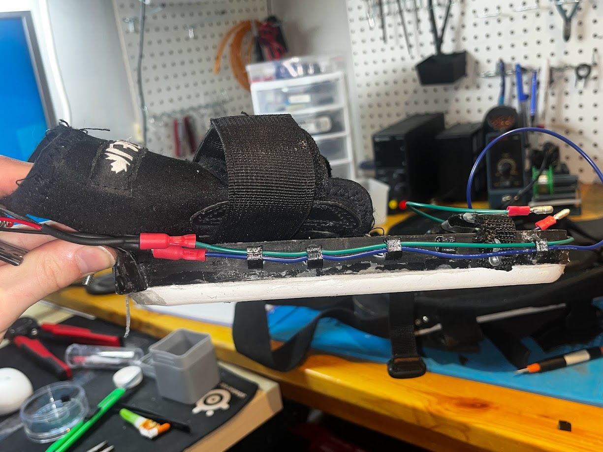
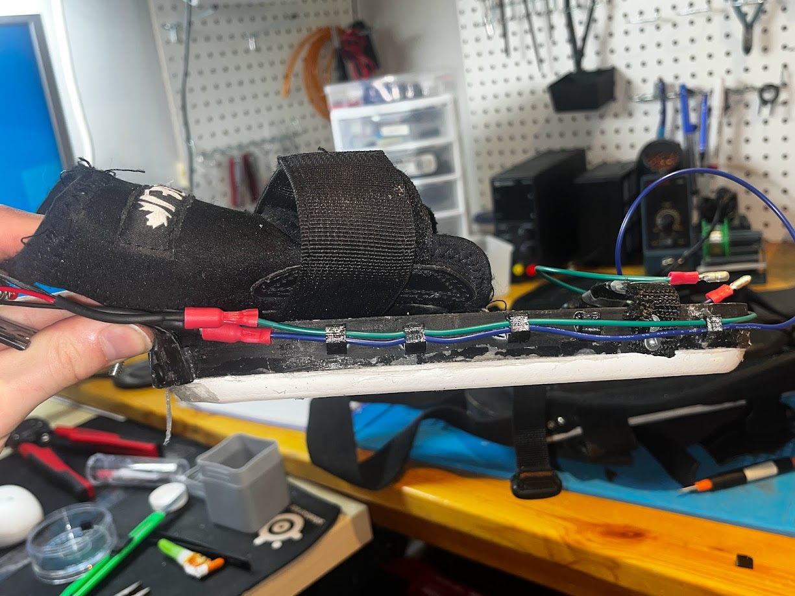

Overview
My most complicated project to date is my fully custom, vacuum-powered, wearable system for flat vertical wall climbing. I have been working on it on and off for 2.5 years, having completed the first successful test of the full suit system in August 2024. Initially, I implemented this system as 2 separate all in one vacuum pads, one for each hand, with a rope and foot hold for each side. The problem with my first design was that it relied on only 2 points of contact, meaning a sudden failure of one pad could mean falling off the wall, and that you had to move the leg and hand of each side at the same time, which was very unnatural.
My second iteration of the project moved the electronics to a backpack style mount, with 4 smaller vacuum pads, one for each appendige. This not only provided more redundancy, but also increased the total suction force overall from the suit as I added 2 additional vaccuum pump motors. I also implemented an arduino based pressure monitoring system with indicator LEDs on my arms which inform me when a negative pressure capable of sustaining my weight has been reached (generally about -9psi)
The overall design is relatively simple. To start there are 2 5000mAh high amperage 12V lipo batteries attached at the top of the backpack mount. These batteries power the four 12V -84KPA vacuum pump motors, each of which connects to their own vacuum pad. In the vacuum system between each motor and pad is a solenoid and a vacuum pressure sensor. The normally-closed solenoid is opened by a button placed in the hand grip of each arm pad, which allows the vacuum to be released from said arm pad, in addition to releasing leg pad of the opposite side, leading to a natural climbing movement. The vacuum pressure sensors feed their data to an arduino which was programmed to turn lights up either a red LED (No vacuum <=-9 PSI) or a green LED (Adequate Vacuum >-9 PSI) on the arm pads of each side. These LEDs are only lit up if both the connected arm and leg (example left arm and right leg), have sufficient suction, meaning the user can move the opposite arm and leg (right arm and left leg) without falling off the wall. This arduino is powered by a buck converter which steps the 12V from the battery down to 5v.
The arm and leg pads are made from painted wood plank pieces which have been partially hollowed and fitted with a standard rubber door gasket from home depot followed by a ring of high density insulation foam, both of which have been sealed with silicone to create a solid seal with a good coefficient of friction against the wall. The arm pads are mounted to a pair of wrist guards allowing them to be strapped to the arms and have metal hand grips on their ends which contain the solenoid control buttons. The leg pads are attached to the mounting velcro system from old hockey pads, in addition to foot straps which bear the majority of the weight of the user. All 4 pads have a vacuum tube attachment which are sealed with silicone as well. Additionally, a recent addition to the leg pads are more padding behind the shins which push the pads further out and make them easier to attach to the wall.
The user can power the system up with switches attached to front arm mounts which attach to the arm pads via velcro and which also harbor the indicator LEDs. The wiring and vacuum tubing is run through tube shielding to prevent snagging and damage to the wires which is kept in place by clips along the arms and shoulders of the shirt. The differnet components are mounted to the backpack with custom designed and 3D printed mounts to ensure they are held securely. All wiring is connected via quick connectors allowing for easy and quck disconnection and connection of the systems when taking on and off the suit.
Gallery
 
